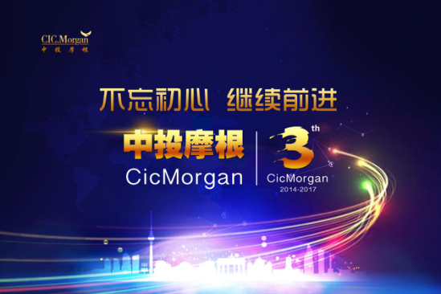
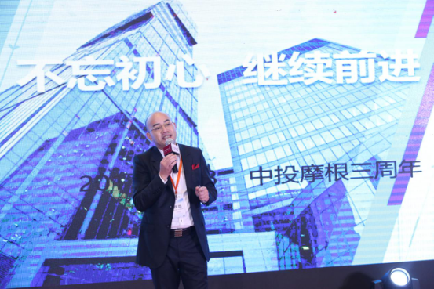
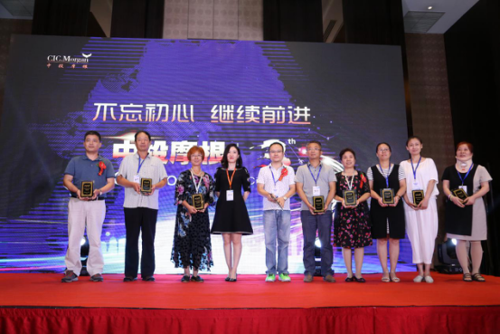

2017年8月18日，中国知名互联网金融平台中投摩根正式成立三周年庆典在北京希尔顿逸林酒店主宴会厅隆重举办。庆典的主题为“不忘初心，继续前进”，在此次庆典上，中投摩根创始人兼董事长陈华、中投摩根联合创始人兼CEO赵倩怡出席活动并致辞，现场分享了中投摩根三年来的发展历程和成果，也进一步明确了公司未来的发展方向。
中投摩根成立于2014年8月，实缴资本金1亿元，专注于以金融科技在解决全国中小企业融资问题的同时为广大出借人提供安全优质的金融服务，目前中投摩根正在积极拓展以供应链金融为核心的新型金融产品，加速推动公司的金融科技革命。
参与庆典的除了公司员工外，中投摩根还邀请了来自中国人民银行、国家开发银行、国家开发投资公司、北京市金融局、北京市公安局、马鞍山市政府、山西省审计厅、中国开发性金融促进会、中国供应链金融产业生态联盟、中国一带一路供应链金融联盟、安徽省驻京办、盛景嘉成母基金、北京慧学律师事务所、美国井通科技区块链公司、创客大道创新邦、美嘉利新医疗雄安产业路由器等商政各界的多位重量级嘉宾，以及多位来自全国各地的中投摩根出借人代表。

从2014年成立至今这三年，中投摩根从零开始，在长期保持零逾期零坏账的同时不断实现用户人数和成交金额的突破，曾荣获《中国互联网金融最具企业价值奖》、《推动民间金融市场发展十大领先品牌》、《中国互联网金融AAA级信用企业》等多项荣誉，成功获得ICP证书，并于今年5月与海口联合农商银行正式达成银行资金存管合作，进一步提升平台的资金安全。在庆典前夕，中投摩根正式成为中国供应链金融产业生态联盟副理事长单位，为中投摩根在供应链金融领域的进一步发展铺平了道路。

从成立之初，中投摩根就立志成为一家能为借款企业提供持续稳定资金支持，为出借人提供优质安全金融服务的互联网金融平台，三年来中投摩根人兢兢业业，从风控、资金安全、用户体验、信息技术等多个层面不断升级优化，逐渐发展成为如今的综合性互联网金融平台。
中投摩根在为用户提供安全稳定的互联网金融服务的同时，在助力公益事业、承担社会责任等方面所做出的努力同样令人期待。中投摩根成功策划和执行了针对困境儿童的慈善捐款活动，筹集善款两千余笔，为国内的公益事业做出贡献。
纵观中投摩根，正如庆典现场的中投摩根出借人武先生的评价：三年来中投摩根的项目真实可靠，资料齐备，敢于开诚布公，可以称之为“真”；三年来中投摩根零逾期零坏账，所有项目均按时还本付息，可以称之为“稳”；三年来中投摩根对每个项目，对每个出借人都负责到底，敢于担当，在实现企业发展的同时不忘承担更多的社会责任，可以称之为“当”，综合评价就是“真稳当”。
从互联网金融迈入2017年以来，国家对于互联网金融行业的监管细则正在持续落地，行业的马太效应也正逐渐显现。对于已经在互联网金融领域深耕了三年的中投摩根来说，公司的发展脚步一直是踏踏实实，步步为营。

采取稳健的发展策略，这很大程度上是因为中投摩根一直以来不忘初心。中投摩根自成立以来就坚持小额分散的原则，充分发挥互联网金融基数大扩散远的优势，在坚守行业底线的同时不断完善风控系统。同时，中投摩根也在顺应行业发展需要，积极与行业协会和相关机构展开合作，正式加入中国开发性金融促进会，同时还成为了中国供应链金融产业生态联盟副理事长单位。积极响应国家对互联网金融资金银行存管的要求，与海口联合农商银行达成资金存管协议。
不忘初心，方得始终。中投摩根不仅将其作为公司的使命，也一直将这句话和其承载的意义落实到了行动上。互联网金融领域风起云涌，中投摩根愿意成为这股浪潮中的中流砥柱，同时中投摩根也将不断实现自身的不断突破和创新。在供应链金融领域走的更久更远，为借款人、出借人乃至国家和社会创造更多的价值。